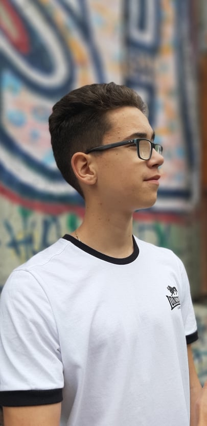
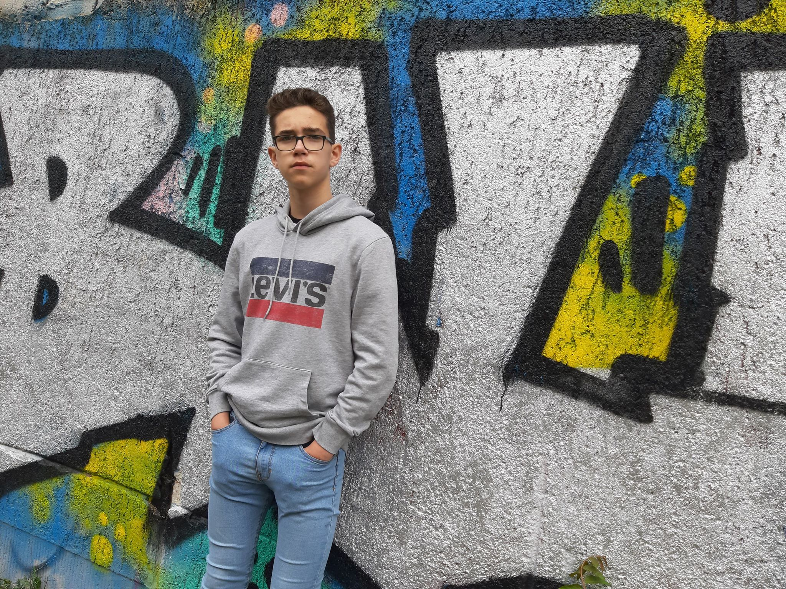
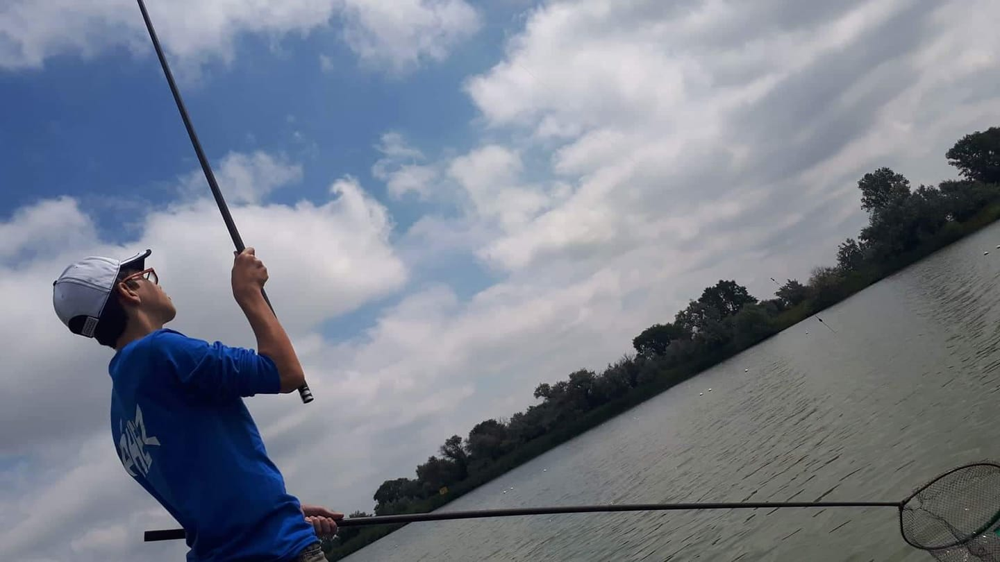
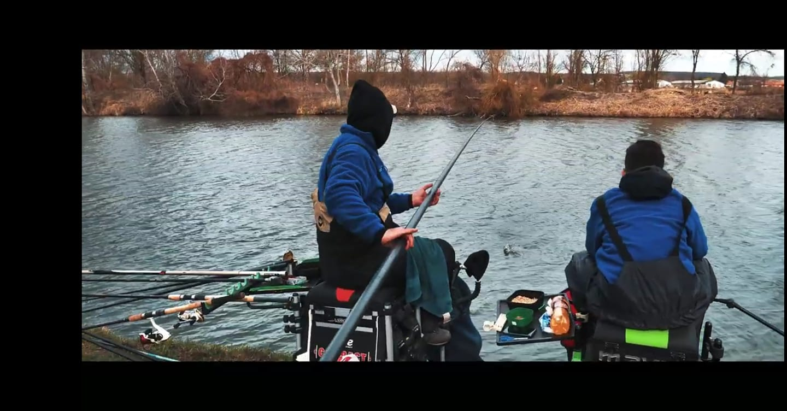

A kedvenc focicspatom a Manchester United

BEMUTATKOZÁS
Rizmajer Bence
15 éves vagyok. Albertirsán élek, Budapesttől körülbelül 50km-re. Szeretek focizni illetve kosárlabdázni, de a többi csapat sportot is szeretem. Nagyon szeretek szabidőmbe filmeket, sorozatokat nézni illetve nagyon sűrűn hallgatok zenét. Hétvégente a barátaimmal szoktam lenni. Általában vásárolgatunk vagy moziba megyünk, de sokat szoktunk egymásnál meccsett nézni vagy közösen bulizni. Versenyhorgászok.
Hobbijaim igazából a képszerkesztés és a rajzolás. A képszerkesztés alatt a reklámkép, szórólapok stb. készítését értem. Van is egy alkotói oldalam ami még kezdetleges, de idővel szeretnék komolyabban is ezzel foglalkozni, mert ez érdekel és a kreativításom is kiélhetem benne.
Az alkotói oldalam ahol a további oldalaimról is található információ
Kinézetem:
184 cm magas vagyok. Szemüveget viselek, Barna a hajam, 64 kg vagyok, Szeretek letisztult kinézetű pólókat hordani, leginkább csak fehéret, de a fekete is belefér. A szürke pulcsikat szeretem és a világos cipőtket kizárólag fehér színű zoknival.
Itt lenne rólam kettő fénykép:
 
Horgászat
Nagyon szeretek horgászni, igazából nincs sok időm rá évközben csak hétvégente. Általában versenyeken szoktunk indulni páros kategóriában vagy egyénileg.


Fociii
8 évet fociztam a városi focicsapatba. u14 korosztályba 1. helyet értük el a bajnokságban. u15-ben szintén sikerült bajnokokká válnunk.
Mára jobban szeretem a TV-ben nézni a focit, de néha-néha szoktunk a barátokkal is strandokon, termekben.
A kedvenc focicspatom a Manchester United